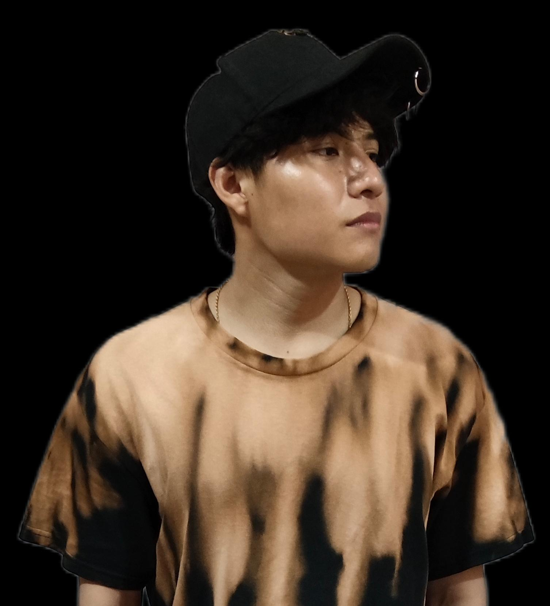

Este espacio está diseñado para conocer mis habilidades y trabajos en lo que más disfruto hacer.

Me encanta aprender, trabajar en equipo y enfrentar nuevos retos.
Ilustración | Desarrollo Web | Fotografía | Modelado 3D | UX/UI
Blender | Microsoft Office | CapCut | Canva
Español 100% | Inglés B2 70 %
““He desarrollado la visualización espacial y el pensamiento estructurado, lo que me permite construir modelos digitales con mayor precisión, aplicando renderizados y texturas. También he fortalecido mi capacidad para resolver problemas técnicos, aplicando mis conocimientos en contextos reales. A continuacion veras algunos de mis trabajos hechos.”
Ver más“He desarrollado la creatividad y la capacidad de expresar ideas visualmente. Además, he mejorado mi observación y atención al detalle, lo que me permite crear composiciones más claras y atractivas. He realizado proyectos para la Universidad Autónoma del Carmen (UNACAR), aplicando mis habilidades en trabajos reales. A continuacion te muestro algunos de mis trabajos”
Ver más“He aprendido, gracias a la clase de fotografía, el manejo de parámetros como el ISO, la apertura y la velocidad de obturación. Además, he desarrollado habilidades en la composición, el encuadre y el uso de la luz para lograr fotografías más equilibradas y de mejor calidad.” A continuacion te muestro algunos de mis trabajos
Ver más